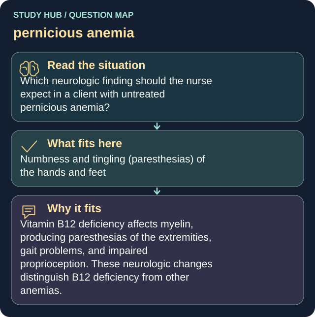

Which neurologic finding should the nurse expect in a client with untreated pernicious anemia?
Answer
Numbness and tingling (paresthesias) of the hands and feet
Reasoning
Vitamin B12 deficiency affects myelin, producing paresthesias of the extremities, gait problems, and impaired proprioception.
Clinical detail
These neurologic changes distinguish B12 deficiency from other anemias.
Why the other answers do not fit
- Bilateral hand tremors relieved by rest
- Sudden one-sided facial droop
- Seizure activity
Shared reasoning for choices without a separate note: Vitamin B12 deficiency affects myelin, producing paresthesias of the extremities, gait problems, and impaired proprioception. These neurologic changes distinguish B12 deficiency from other anemias.
